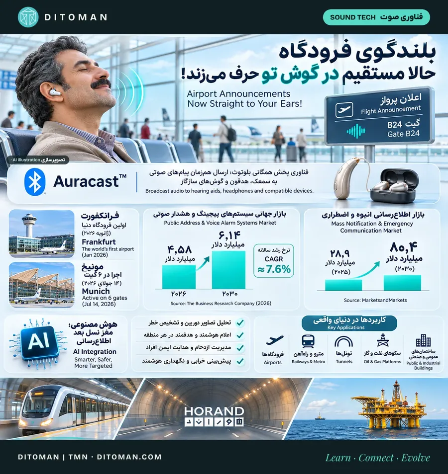

بلندگوی فرودگاه حالا مستقیم در گوش مسافران حرف میزند؛ آینده چندمیلیارددلاری پیجینگ هوشمند
Airport speakers now talk straight into your ears: the multi-billion-dollar future of smart paging
از فرانکفورت و مونیخ تا برایتون؛ Auracast، بازار جهانی، هوش مصنوعی، شرکتها، استانداردها و فرصت صنعت صوت ایران.
From Frankfurt and Munich to Brighton: Auracast, the global market, AI, the companies, the standards and the opportunity for Iran.
0. در یک نگاه
صوت عمومی، یعنی بلندگوهای فرودگاه، مترو، مدرسه، بیمارستان و کارخانه، از قدیمیترین فناوریهای زندگی روزمره است. در سال ۲۰۲۶ این فناوری بزرگترین تغییرش را تجربه میکند: اطلاعیهها از بلندگوی سقف، مستقیم به گوش هر نفر میرسند و سیستم صوت از یک «پخشکننده» به یک «زیرساخت ارتباطی هوشمند» تبدیل میشود.
| شاخص | عدد |
|---|---|
| اولین فرودگاه با اطلاعیه مستقیم به هدفون و سمعک | فرانکفورت، ژانویه ۲۰۲۶ |
| گیتهای مجهز در مونیخ (از ۱۴ ژوئیه ۲۰۲۶) | ۶ گیت در دو ترمینال |
| اولین نصب دائمی در راهآهن بریتانیا | ایستگاه برایتون، ۲۰۲۶ |
| افراد دارای کمشنوایی در جهان | بیش از ۱٫۵ میلیارد نفر |
| بازار پیجینگ و هشدار صوتی، ۲۰۲۶ تا ۲۰۳۰ | ۴٫۵۸ به ۶٫۱۴ میلیارد دلار (رشد سالانه حدود ۷٫۶٪) |
| بازار اطلاعرسانی انبوه، ۲۰۲۵ تا ۲۰۳۰ | حدود ۲۸٫۹ به ۸۰٫۴ میلیارد دلار (رشد سالانه حدود ۲۲٫۷٪) |
1. پیجینگ، صوت عمومی، هشدار صوتی و اطلاعرسانی انبوه: فرقشان چیست؟
- پیجینگ: صدا زدن یک فرد یا اعلام یک پیام کوتاه در یک فضا؛ مثل «مسافران پرواز ۴۱۲ به گیت ۱۲ مراجعه کنند»
- صوت عمومی (PA): مجموعه بلندگو، آمپلیفایر، میکروفن و کنترلر که اطلاعیهها و موسیقی زمینه را در یک ساختمان یا مجموعه پخش میکند
- هشدار صوتی اضطراری (VA): همان سیستم، اما ساختهشده طبق استانداردهای ایمنی؛ در آتشسوزی یا تخلیه باید کار کند، خرابیاش را گزارش دهد و پیام قابل فهم پخش کند
- اطلاعرسانی انبوه (Mass Notification): لایه بالاتر؛ یک پیام همزمان روی بلندگو، پیامک، اپلیکیشن، صفحهنمایش و ایمیل، در چند ساختمان یا یک شهر
در بازار جهانی، دو حوزه اول و سوم معمولاً با هم «PAVA» نامیده میشوند.
2. فرانکفورت: اولین فرودگاه دنیا
در ۲۸ ژانویه ۲۰۲۶، فرودگاه فرانکفورت اعلام کرد اولین فرودگاه دنیاست که همه اطلاعیههای گیت را مستقیم به دستگاه شخصی مسافران میفرستد. آزمایش روی گیتهای A16 و A17 ترمینال ۱ انجام شد و قرار بود حدود دو ماه بازخورد مسافران جمع شود.
شرکای پروژه:
فرودگاه فرانکفورت (Fraport) و شرکت آلمانی Sittig Technologies، همراه با دانشگاه علوم کاربردی فرانکفورت؛ و گوگل، سامسونگ، GN و Bluetooth SIG بهعنوان شرکای فناوری. هزینه از برنامه نوآوری دیجیتال ایالت هسن تأمین شد.
نکته هوشمندانه:
فرستندههای Auracast داخل همان ایستگاههای پیجینگ IP موجود در گیتها نصب شدند. نه دیوار تخریب شد و نه سیستم قبلی کنار رفت؛ فقط یک لایه تازه اضافه شد. فرودگاه فرانکفورت در ۲۰۲۵ میزبان ۶۳٫۲ میلیون مسافر بود.
3. مونیخ: قدم بعدی
از ۱۴ ژوئیه ۲۰۲۶، فرودگاه مونیخ با همان شرکت Sittig این سیستم را روی ۶ گیت در دو ترمینال راه انداخت.
- وصل شدن ساده: یک کد QR در هر گیت؛ گوشی را جلویش بگیرید و وصل شوید
- روی اندروید: اطلاعیه با صدای ملایم وارد موسیقی میشود و بعد آهنگ ادامه پیدا میکند
- روی آیفون: فعلاً با اپلیکیشن جانبی، چون اپل هنوز Auracast را فعال نکرده است
- برای کمشنواها: سمعک و کاشت حلزون سازگار، پیام را مستقیم و بدون نویز سالن دریافت میکنند
4. بریتانیا: از ایستگاه برایتون تا ترجمه زنده
ایستگاه برایتون، با بهرهبرداری Southern، Thameslink و Gatwick Express، اولین نصب دائمی Auracast در شبکه ریلی بریتانیا را دارد. سیستم را Ampetronic و Listen Technologies با محصول Auri نصب کردهاند و حلقه القایی قدیمی ایستگاه هم کنار آن باقی مانده است. در بریتانیا حدود ۱۸ میلیون نفر ناشنوا یا کمشنوا هستند.
قدم بعدی، ترجمه با هوش مصنوعی:
از سپتامبر ۲۰۲۶، ایستگاههای برایتون (آزمایش یکساله) و بریستول تمپل میدز (چهار سکو) ترجمه زنده اطلاعیهها را با هوش مصنوعی شرکت XRAI آزمایش میکنند. مسافر با گوشی و هدفون سازگار، اطلاعیه را به زبان دلخواه خودش میشنود.
5. Auracast چیست؟
Auracast فناوری پخش همگانی صدا بر پایه Bluetooth LE Audio است. بلوتوث معمولی یک گوشی را به یک هدفون وصل میکند؛ Auracast یک فرستنده را به تعداد نامحدودی گیرنده وصل میکند، مثل یک ایستگاه رادیویی کوچک. هر دستگاه به جفتشدن جداگانه نیاز ندارد و یک فرستنده میتواند چند کانال، مثلاً چند زبان، را همزمان پخش کند.
- کجا نصب شده: فرودگاههای فرانکفورت و مونیخ، ایستگاههای برایتون و بریستول، اپرای سیدنی، تئاتر ملی بریتانیا و تئاتر گلوب شکسپیر
- گوشیها: اندروید ۱۶ از Auracast پشتیبانی میکند؛ اپل هنوز آن را روی دستگاههایش فعال نکرده است
- استاندارد: استاندارد بینالمللی IEC برای نصبهای کمکشنوایی با Auracast احتمالاً تا اواخر ۲۰۲۷ منتشر نمیشود
- واقعبینی: تعداد مکانهای مجهز هنوز کم است و همه سمعکها و هدفونها آن را پشتیبانی نمیکنند؛ پس بلندگو تا سالها لایه اصلی میماند و Auracast لایه مکمل است
6. بازار جهانی چقدر ارزش دارد؟
بازار پیجینگ و هشدار صوتی (PAVA)، طبق The Business Research Company (مارس ۲۰۲۶):
| سال | ارزش بازار |
|---|---|
| ۲۰۲۵ | ۴٫۲۷ میلیارد دلار |
| ۲۰۲۶ | ۴٫۵۸ میلیارد دلار |
| ۲۰۳۰ | ۶٫۱۴ میلیارد دلار |
| رشد سالانه تا ۲۰۳۰ | حدود ۷٫۶٪ |
بازار اطلاعرسانی انبوه، طبق MarketsandMarkets (ژانویه ۲۰۲۶):
| سال | ارزش بازار |
|---|---|
| ۲۰۲۵ | حدود ۲۸٫۹ میلیارد دلار |
| ۲۰۳۰ | حدود ۸۰٫۴ میلیارد دلار |
| رشد سالانه | حدود ۲۲٫۷٪ |
این ارقام پیشبینی بازار هستند، نه درآمد قطعی آینده. دو بازار تعریف متفاوتی دارند و ارزششان قابل جمعزدن نیست.
موتورهای رشد:
آمادگی برای بحران و بلایای طبیعی، سختتر شدن مقررات ایمنی، سیستمهای ابری، پیامرسانی همزمان در چند شعبه و شهر، و نیاز به دسترسپذیری برای کمشنواها و سالمندان. پرشتابترین بخش اطلاعرسانی انبوه، تداوم کسبوکار و مدیریت بحران است.
7. هوش مصنوعی؛ وقتی سیستم صوت فقط بلندگو نیست
مرحله بعدی تحول صنعت صوت، اتصال سیستمهای پیجینگ به دوربینها، حسگرها، نرمافزارهای مدیریت ساختمان و سامانههای کنترل صنعتی است.
تصور کنید در یک تونل، خودرویی متوقف شده یا ازدحام غیرعادی ایجاد شده است. هوش مصنوعی میتواند تصاویر دوربینها را تحلیل و وضعیت مشکوک را شناسایی کند. سپس سیستم، طبق قواعد ایمنی و تأییدهای لازم، اطلاعیه مناسب را فقط در همان منطقه پخش میکند.
- تشخیص خطر از تصویر: ازدحام غیرعادی، ورود به محدوده ممنوع، توقف خودرو در تونل
- اعلام هدفمند: پیام متفاوت برای هر منطقه، هر طبقه و هر سکو
- مدیریت ازدحام و تخلیه: هدایت مرحلهبهمرحله افراد به مسیر امن
- پیام چندزبانه: تولید و ترجمه خودکار اطلاعیه، مثل آزمایش بریتانیا
- نگهداری پیشبینانه: تشخیص آمپلیفایر یا بلندگویی که رفتار غیرعادی دارد، پیش از خرابی
در پروژههای حساس، تشخیص هوشمند نباید تنها مرجع صدور فرمان اضطراری باشد. سیستم باید کنترل انسانی، قواعد قطعی ایمنی، مسیر ارتباطی پشتیبان و عملکرد مستقل هنگام قطع شبکه داشته باشد.
در مقررات اروپایی ایمنی تونلها نیز پایش تصویری و تشخیص خودکار حادثه پیشبینی شده است. بخشی از این امکانات همین امروز در سامانههای صنعتی قابل اجراست و بخشی دیگر به توسعه و یکپارچهسازی بیشتر نیاز دارد.
8. کاربردها، صنعت به صنعت
| صنعت | نیاز اصلی | فناوری کلیدی |
|---|---|---|
| فرودگاه | اطلاعیه گیت، چندزبانه، دسترسپذیری | پیجینگ IP، Auracast |
| مترو و راهآهن | پیام هر سکو و قطار، تخلیه | پیجینگ منطقهای، اتصال به کنترل ترافیک |
| تونل | تشخیص حادثه، هشدار فوری | دوربین هوشمند، بلندگوی تونل، رادیو |
| نفت و گاز و پتروشیمی | هشدار گاز و آتش در محیط پرصدا | تجهیزات ضدانفجار، اتصال به حسگرها |
| بیمارستان | پیام منطقهای بیسروصدا، فراخوان کادر | پیجینگ IP، پیام روی گوشی کارکنان |
| مدرسه و دانشگاه | زنگ، اطلاعیه، تخلیه | سیستم زمانبندیشده، اطلاعرسانی انبوه |
| برج و مجتمع تجاری | تخلیه طبقهبهطبقه، موسیقی زمینه | سیستم هشدار صوتی استاندارد |
| شهر | هشدار بلایای طبیعی | بلندگوی فضای باز، پیامک همگانی |
9. چه کسانی در این بازار بازی میکنند؟
| شرکت | حوزه | نکته |
|---|---|---|
| Keenfinity (آلمان) | پیجینگ و هشدار صوتی، ارتباطات حرفهای | بخش سابق امنیت و ارتباطات بوش؛ ژوئیه ۲۰۲۵ به Triton فروخته شد؛ حدود ۴٬۳۰۰ کارمند و بیش از یک میلیارد یورو درآمد |
| Honeywell و Siemens | ایمنی ساختمان و هشدار حریق | سیستمهای یکپارچه آتش و هشدار صوتی |
| TOA (ژاپن) | صوت عمومی و هشدار | از نامهای قدیمی صوت عمومی در آسیا و خاورمیانه |
| Sittig (آلمان) | پیجینگ فرودگاه و حملونقل | مجری پروژههای فرانکفورت و مونیخ |
| Ampetronic و Listen Technologies | کمکشنوایی و Auracast | مجری ایستگاه برایتون |
| Everbridge (آمریکا) | اطلاعرسانی انبوه و مدیریت بحران | ژوئیه ۲۰۲۴ با حدود ۱٫۸ میلیارد دلار به Thoma Bravo فروخته شد |
| Motorola Solutions | ارتباطات اضطراری | Rave Mobile Safety را در ۲۰۲۲ خرید |
| گوگل، سامسونگ، GN | گوشی و سمعک | شرکای فناوری فرودگاه فرانکفورت |
خرید و فروشهای بزرگ این حوزه نشان میدهد سرمایهگذاران، اطلاعرسانی اضطراری و ارتباطات ایمنی را یک زیرساخت بلندمدت میبینند.
10. زنجیره ارزش: پول در کجای این صنعت است؟
- تراشه و ماژول: تراشههای بلوتوث LE Audio و پردازش صدا
- سختافزار: بلندگو، آمپلیفایر، میکروفن، ایستگاه پیجینگ، فرستنده Auracast
- نرمافزار: کنترل مرکزی، زمانبندی، پیامهای آماده، داشبورد سلامت سیستم، تحلیل تصویر
- طراحی و مهندسی: محاسبه آکوستیک، وضوح گفتار، طراحی مناطق و مسیرهای پشتیبان
- نصب و یکپارچهسازی: اتصال به اعلام حریق، دوربین، مدیریت ساختمان و کنترل صنعتی
- نگهداری و خدمات: قرارداد پشتیبانی، تست دورهای و بهروزرسانی؛ درآمدی تکرارشونده و پایدار
11. استانداردها: زبان مشترک ایمنی
سیستم هشدار صوتی اضطراری فقط «بلندگوی بلندتر» نیست؛ باید طبق استاندارد طراحی، تست و نگهداری شود.
- EN 54-16 و ISO 7240-16: تجهیزات کنترل هشدار صوتی
- EN 54-24: بلندگوهای سیستم هشدار صوتی
- EN 50849: سیستمهای صوتی برای مقاصد اضطراری
- Auracast: استاندارد IEC برای نصبهای کمکشنوایی، احتمالاً اواخر ۲۰۲۷
برای شرکتهای ایرانی، گرفتن گواهیهای معتبر کلید ورود به پروژههای بزرگ و صادرات است.
12. چه تغییراتی در راه است؟
| دیروز | امروز و فردا |
|---|---|
| کابل آنالوگ جدا برای هر منطقه | صدا روی شبکه IP |
| یک پیام برای همه، با یک بلندی | پیام جدا برای هر منطقه و هر گروه |
| فقط بلندگوی سقفی | بلندگو + هدفون + سمعک + گوشی + صفحهنمایش |
| تعمیر بعد از خرابی | پایش لحظهای و پیشبینی خرابی |
| اپراتور با میکروفن | پیامهای آماده، زمانبندیشده و چندزبانه |
| سیستم جدا از دوربین و حسگر | یکپارچه با دوربین، حسگر و مدیریت ساختمان |
| امنیت فیزیکی | امنیت سایبری در برابر نفوذ و پیام جعلی |
13. فرصت تازه برای صنعت صوت ایران
فرودگاهها، مترو، ایستگاههای راهآهن، بیمارستانها، کارخانهها و ساختمانهای عمومی ایران به زیرساختهای صوتی و اطلاعرسانی نیاز دارند. بخش بزرگی از سیستمهای موجود هنوز آنالوگ است.
توسعه سیستمهای پیجینگ تحت شبکه، ماژولهای Auracast، کنترلرهای هوشمند و تجهیزات یکپارچه با دوربینها و حسگرهای صنعتی میتواند زمینه جدیدی برای مهندسی و تولید داخلی ایجاد کند.
- بازارهای درگیر: حملونقل هوایی و ریلی، متروی شهرها، تونلهای جادهای، نفت و گاز و پتروشیمی، نیروگاهها، بیمارستانها، مدارس و دانشگاهها، اماکن مذهبی، ورزشگاهها، برجها و مجتمعهای تجاری، و مدیریت بحران شهری
- آمادگی برای زلزله: در کشوری که آمادگی برای حوادث طبیعی حیاتی است، سیستمهای هشدار و تخلیه استاندارد در ساختمانهای پرتردد ارزش واقعی دارند
- ارتقای تدریجی، مثل فرانکفورت: اضافه کردن لایه دیجیتال و تحت شبکه روی زیرساخت موجود؛ هزینه کمتر و اجرای سریعتر
- مزیت شرکتهای داخلی: شناخت زبان و نیاز محلی، پشتیبانی نزدیک، قیمت رقابتی و توان سفارشیسازی
- هوراند، پیشگام داخلی: هوراند، بهعنوان یکی از اولین و قدیمیترین شرکتهای این حوزه در ایران، در تلاش است خود را به این فناوری نزدیک کند تا بتواند اولین نمونههایش را برای بازار داخلی آماده کند.
- دسترسپذیری: اطلاعیههایی که به کمشنواها و سالمندان هم برسد؛ حوزهای انسانی که در ایران تقریباً خالی است
- شغل و مهارت: طراحی آکوستیک، شبکه، نرمافزار کنترل، نصب و نگهداری؛ زنجیرهای از کار تخصصی برای مهندسان جوان
نقشه راه پیشنهادی برای یک شرکت ایرانی:
- قدم ۱: پیجینگ IP و کنترل مرکزی روی محصولات فعلی
- قدم ۲: پایش سلامت سیستم و گزارش خرابی
- قدم ۳: اتصال به اعلام حریق، دوربین و مدیریت ساختمان
- قدم ۴: پروژه آزمایشی Auracast در یک سالن یا ایستگاه
- قدم ۵: گرفتن گواهیهای استاندارد و ورود به پروژههای بزرگ و بازار منطقه
این تحول فقط درباره فروش بلندگوهای بیشتر نیست؛ درباره توسعه سیستمهایی است که بتوانند اطلاعات را دقیقتر، سریعتر و متناسب با نیاز هر محیط منتقل کنند.
14. چالشها
- استاندارد و کیفیت: تجهیزات ارزان و بیکیفیت در لحظه بحران جواب نمیدهند؛ طراحی و تست طبق استاندارد لازم است
- دستگاهها: همه گوشیها و سمعکها هنوز از Auracast پشتیبانی نمیکنند
- امنیت سایبری: سیستمی که روی شبکه است باید در برابر نفوذ و پیام جعلی محافظت شود
- تأمین قطعات: دسترسی به تراشهها، قطعات و پشتیبانی فنی جهانی برنامهریزی جدی میخواهد
- هوش مصنوعی: خطای تشخیص در محیط حساس پرهزینه است؛ کنترل انسانی و مسیر پشتیبان ضروری است
15. سه سناریوی آینده
- رشد آرام: پیجینگ IP جای آنالوگ را میگیرد و Auracast در فرودگاهها، ایستگاهها و سالنها لایه مکمل میشود
- جهش هوشمند: با فعال شدن Auracast در همه گوشیها و انتشار استانداردها، اطلاعیه شخصی و چندزبانه به امری عادی تبدیل میشود
- ایمنیمحور: مقررات سختتر و بلایای طبیعی، اطلاعرسانی اضطراری را به بخش اصلی بودجه شهرها و صنایع تبدیل میکند
16. نگاه دیتومان
صنعت صوت عمومی در حال حرکت از یک سیستم صرفاً پخشکننده به یک زیرساخت ارتباطی هوشمند است.
در آینده، بلندگوها، سمعکها، هدفونها، دوربینها و حسگرها میتوانند اجزای یک شبکه اطلاعرسانی یکپارچه باشند.
آینده اطلاعرسانی عمومی فقط بلندتر شنیدهشدن نیست؛ رساندن پیام درست، در زمان درست، به مخاطب درست است.
برای ایران، این یعنی فرصتی واقعی: ارتقای هوشمند زیرساختهای موجود، ایمنی بیشتر در ساختمانها و شهرها، شغل تخصصی برای مهندسان، و صدایی که هیچکس را جا نمیگذارد.
بیشتر بخوانید
- چرا یونایتد خرید بلیت با هوش مصنوعی را ممنوع کرد؟
- هوش مصنوعی برای کسبوکارهای کوچک
- صنعت تازه: ساختن هوش مصنوعی برای کسبوکارها
- قیمت لحظهای تتر، بیتکوین و طلا
منابع
- Frankfurt Airport / GN: first airport to use Auracast for announcements
- HHTM: Sittig brings Auracast to Munich Airport
- HHTM: UK first permanent rail Auracast installation (Brighton)
- The National: UK stations test live translation of announcements
- HHTM: why Auracast could change hearing access
- TechCrunch: Android adds Auracast support
- The Business Research Company: PA and voice alarm systems market 2026 (via GII)
- MarketsandMarkets: mass notification market to $80.44B by 2030
- Triton: Keenfinity (former Bosch security and communications) acquisition
- Thoma Bravo completes acquisition of Everbridge
- Motorola Solutions acquires Rave Mobile Safety
- BroadcastBeat: AES67 announcer consoles at ISE 2026
آخرین بازبینی: ۲۲ آبان ۱۴۰۵. ارقام بازار پیشبینی مؤسسات پژوهشی است، نه درآمد قطعی.